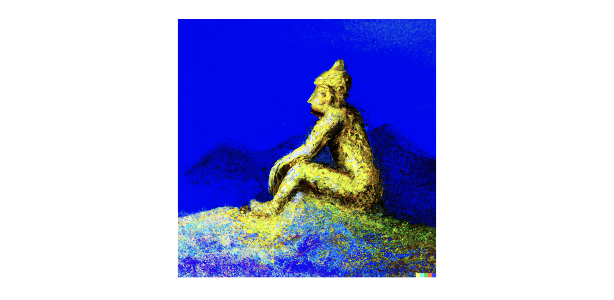

Myth of Latter-day Saint Prosperity
This post is work in progress. Just writing down some preliminary thoughts.

This post is mainly geared toward my Latter - day Saint peers because I think, collectively, we have some misconceptions about what the demographics of the LDS church (within the United States) are. Though I don’t have data to back this claim up per say that other LDS people in fact think this, I often hear when speaking with others the claim that although members of the church make up only a small percentage of the population, we are disproportionally wealthy when compared to the general population. After hearing this claim again yesterday, since I’ve thought this was false, I decided to look at some data describing this claim. I believe my opinion changed on this awhile back when I read a Pew Research article that provided a demographic profile of Mormons in the US. If anyone is interested in the original article I read, I did find it here.
Using data from Pew’s Religious Landscape study, I looked at the demographics of the LDS and Jewish Population, and I am comparing this with the American Community Survey estimates of the general population. Keep in mind: for this first figure, I used data from 2014 which is now almost 10 years ago (yikes that’s my high school graduation year). Probably not THAT much has changed in 10 years, but there’ve probably been some shifts.

From this preliminary figure, we can see that (and some of this also noted in the Pew article above) that the LDS actually has a larger middle class than the rest of the population and has a smaller proportion of people in the highest income bracket. In the data I have above, It also shows that the LDS has a higher proportion of low income individuals as well compared to the general population…
It’s a stereotype for the Jewish people to generally be wealthier and more influential, and when we compare Latter-day Saints to Jews, the gap is large. According to our data, the Jews are more than twice as likely to be in the top income bracket than Latter-day Saints.
Hopefully, if you had this perception, this figure convinces you that this is a myth, but let’s not stop here. This data was collected in 2014 afterall and is compared against two different sources. Also, it should be noted that the sample size for the Religious Landscape survey has just over 500 latter-day saints. Let’s next look at some larger, more recent data on this.

insert text

insert text
My thoughts on why this stereotype exists…
[insert don’t trust your gut quote. The bias of young startup founders.]